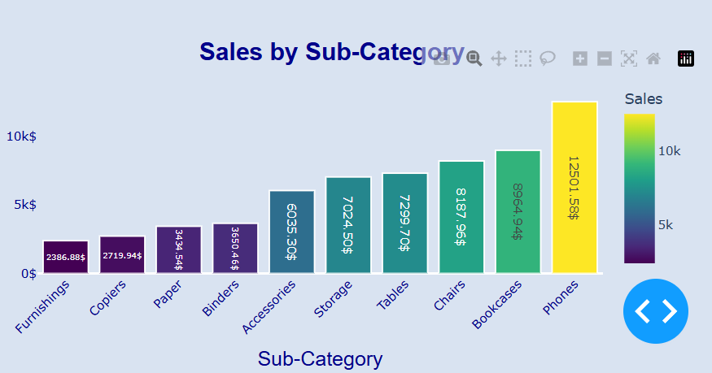

Superstore Sales Dashboard
Description by me
This is my first dashboard and also my first project using DASH.
Specifically, this app has three pages:
- The first page provides an overview with all categories, where you can analyze data by pressing some buttons and submitting. You can also click on the graphs to open a larger graph window. Below the graphs page, there are 8 cards which you can change while (rotating? or how to say? p.s believe you got it).
- The second page focuses on states. Here, you also have graphs, a timeline, and a large window that appears when clicking on specific elements.
- The third page is just about products.
Screenshots from app:
And also, if you like this project, please give it a star! (PLEASE!!!) :)
If you have some interesting projects, I can work on them for almost free (or even absolutely free if they look appealing).
If you want to launch this app locally, all you need is:
- Download
app.pyandrequirements.txt(using any method—I'm sure you know how to do it) - Download all libraries from
requirements.txt
WHY AM I TALKING SMTH IF NOBODY WILL SEE IT AAAAAAAAAAA.
Description by CHATGPT
Overview
Welcome to the Superstore Sales Dashboard, a comprehensive and interactive web application designed to help you analyze and visualize sales data with ease. Built with Python's Dash and Plotly libraries, this dashboard offers a dynamic and visually appealing way to explore business data, make informed decisions, and uncover valuable insights. Whether you are a business analyst, a sales manager, or simply a data enthusiast, this dashboard has something to offer!
🌟 Key Features
- Dynamic Data Visualizations:
- Our dashboard comes with interactive charts that allow you to filter data by various categories, date ranges, and metrics. You can explore:
- Category-wise Sales and Profits: Bar charts that break down sales and profits by product sub-category, shipping mode, and customer segment.
- Geographical Sales Distribution: Choropleth maps showing sales and profit distribution across different states in the USA, helping you identify regional performance.
- Product Popularity and Trends: Pie charts and line charts to understand which products are performing well over time, with options to filter by discount presence and other parameters.
- Our dashboard comes with interactive charts that allow you to filter data by various categories, date ranges, and metrics. You can explore:
- User-Friendly Interface:
- Designed with a clean and modern UI, the dashboard is easy to navigate, thanks to its intuitive navigation bar and well-organized layout. You can seamlessly switch between different analysis pages: Category Sales, Sales Map, and Product Popularity.
- Customizable Filters:
- The dashboard offers a range of customizable filters such as checklists, dropdowns, and sliders. You can filter data by:
- Date Range: Use the interactive range slider to focus on specific periods.
- Product Categories and Segments: Choose specific product categories or customer segments to see their impact on sales and profit.
- Discounts and Shipping Modes: Analyze data with or without discounts, or based on different shipping modes.
- The dashboard offers a range of customizable filters such as checklists, dropdowns, and sliders. You can filter data by:
- Insightful KPIs and Metrics:
- The dashboard displays key performance indicators (KPIs) like Total Sales, Total Profit, Average Day Profit, Repeat Customer Rate, and Top Customer. These metrics are dynamically updated based on the selected filters, giving you real-time insights into business performance.
- Interactive Alerts and Modals:
- Helpful alerts guide users on how to interact with the dashboard, ensuring a smooth user experience. Additionally, modal windows provide enlarged views of charts for a deeper dive into the data.
🚀 Why Use the Superstore Sales Dashboard?
- Empower Decision-Making: With data-driven insights at your fingertips, you can make more informed business decisions.
- Save Time and Effort: No need to crunch numbers manually. The dashboard processes and visualizes data in real time, saving you hours of work.
- Improve Business Strategies: By analyzing sales trends and customer preferences, you can tailor your marketing and sales strategies to target high-value segments.
- Great for Presentations: The dashboard's sleek design and interactive features make it perfect for business presentations.
💡 How to Interact with the Dashboard?
- Click on Charts: Dive deeper into the data by clicking on different parts of the charts.
- Use Filters: Apply filters such as date ranges, product categories, and discount presence to customize the data view.
- View Enlarged Charts: Open modal views for detailed charts by clicking on the "info" icons.
🎯 Who Should Use This Dashboard?
- Business Analysts: Quickly generate actionable insights from sales data to drive business growth.
- Sales Managers: Monitor performance across regions and categories to optimize sales strategies.
- Marketing Teams: Understand customer preferences and adjust campaigns to target the right audience.
- Data Enthusiasts: Explore the power of data visualization and interactive dashboards with a real-world dataset.
📦 Get Started Now!
Explore the Superstore Sales Dashboard and transform the way you analyze your business data. Get a holistic view of your sales performance, uncover hidden trends, and make data-driven decisions that matter.
Don't just analyze data—experience it!
For communication with me
gmail:ona2420@gmail.com